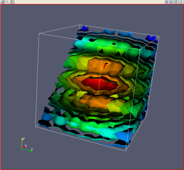
ParaView supports five different types of views (i.e., rendering windows). It also allows multiple views, regardless of type, to be open at the same time in a ParaView application window. When the application launches, ParaView contains a single view: a 3D View. This is the type of view that displays the geometry of datasets that have been loaded or created.
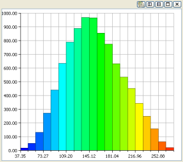
The next two types of views are the Bar Chart view and the XY Plot view. The Bar Chart view can display a histogram of data values contained in a dataset. The XY Plot view can display a 2D plot of one or more scalar variables, either within a given dataset or across timesteps of a dataset containing time information.
The 3D View (Comparative) view displays a series of images of the same dataset with varying values for one or two paramters. This allows you to compare side-by-side the effects of setting these parameters to various values.
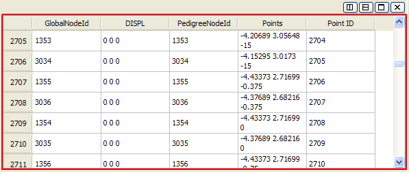
The Spreadsheet view displays the underlying data values in a dataset. From the Display tab for the dataset being shown, you can choose whether to display Cell Data, Point Data, or Field Data. The left-most column of numbers in the spreadsheet view lists the index for each entry in the spreadsheet (point ids for Point Data, cell ids for Cell Data), and the rest of the columns show the values at each index of the various arrays the dataset contains. Left-clicking on an entry in the spreadsheet view will select the corresponding point or cell in the dataset; if the dataset is also shown in a 3D view, the points or cells will be highlighted. Pressing the Shift key while while clicking rows in the spreadsheet view allows you to select a range of rows; pressing the Ctrl key allows you to select several rows which may not be in sequence.
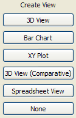
If the bar just above a view is right-clicked, a menu appears; it contains a "Convert To" submenu that allows the type of a particular view to be changed to one of the other four types or to "None". Additionally, from this menu you may close the view or split it horizontally or vertically. When a view is split, creating a new view, the new view initially contains the buttons shown above for selecting the view type.
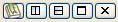
In the upper right corner just above each view is a set of buttons specific to each view. A description of each button is given below.
| 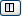 | Split this view into two views that are side-by-side horizontally. |
| 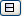 | Split this view into two views that are side-by-side vertically. |
| 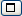 | Maximize this view so it uses all the space in the ParaView application window available to views. |
| 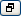 | This button becomes visible when the maximize button for a view has been pressed. It restores the view to its size before being maximized and re-displays the other views that were visible. |
| 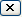 | Close the associated view so it is no longer visible. |
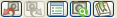
There is also a series of buttons in the upper left corner just above the 3D view. A description of each button is given below.
 | Undo the last camera motion. |
| 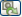 | Redo the last undone camera motion. |
The position of views within the ParaView application window can be interactively rearranged. Left-click in the bar above a view and drag it to the bar above another view. The two views will swap places with one another. Note that the view layout in the ParaView application window does not change. (For example, the right-hand image below is the result of swapping the position of the view at the top with the view in the lower left in the left-hand image below.)
 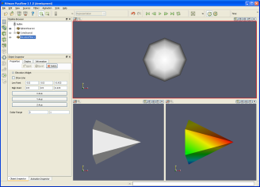
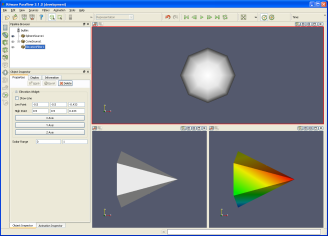